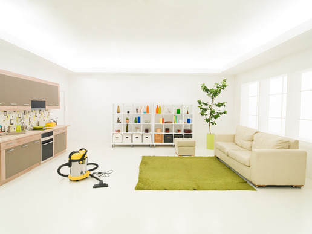
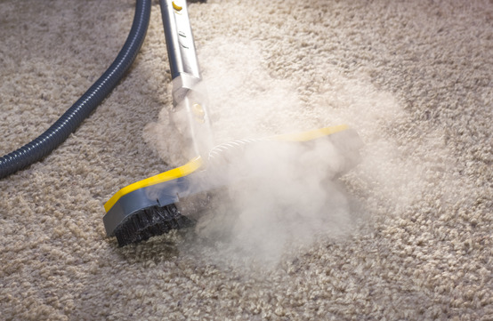

We utilize a truck-mounted hot water steam extraction system. Hot water steam extraction carpet cleaning is the only method of carpet cleaning recommended by all of the major carpet manufactures to maintain your carpets warranty. Truck-mounted hot water steam cleaning has the ability to deep clean and sanitize any carpet style or fibers, leaving it perfectly clean from top to bottom. It removes abrasive soil and it sanitizes your home eliminating dust and bacteria that can be the cause of allergies and illness for people and pets.
As soil and dirt is worn into your high-traffic carpet areas, it can actually damage the carpet fibers. This causes the carpet to look matted and worn. Once carpet fibers have been crushed and pitted they can actually become magnets for additional soil and dirt.
Our system removes deeply ground dirt and debris to extend the life of your carpet and restore the elasticity of the carpet fibers. Other shampoo style machines will leave behind a residue that becomes “sticky” and can actually attract more dirt and grime. Our steam system leaves no residues or shampoos on your carpet because it rinses with pure, fresh water.